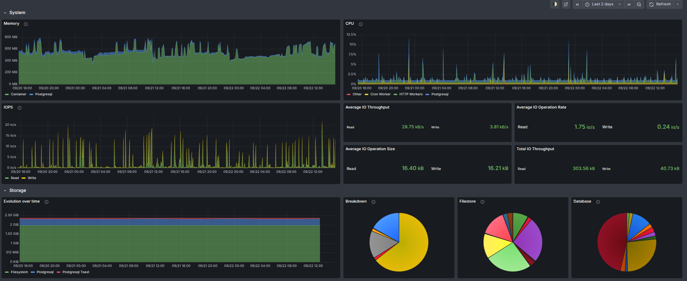

Day 2 — Platform, workflow, testing, performance & upgrades
Stanislas · Odoo Experience 2026 · Brussels
Act 1 of 10
Logistics, getting started, and where Odoo.sh sits among Odoo Online and On-Premise.
Logistics
pad.odoo.com/p/oxp26-masterlass-odoo-shToday
Where Odoo.sh fits
Same product, three different ways to run it — the difference is who manages what, and how much control you get in exchange.
Odoo's own SaaS, fully hosted and managed.
Self-hosted — you own the infrastructure (Day 1).
Odoo's PaaS: managed infrastructure + full code access, git-driven.
Option 1
Option 2
Option 3 — today's subject
A PaaS built specifically for developers running custom code — but still a managed solution, not just "a VM with git on it".
Odoo.sh, concretely
postgresql.conf access, no extensions (PostGIS, ltree…).Act 2 of 10
Branches, builds, workers, hosting tiers, the major-version upgrade flow.
The big picture
--workers=N pre-forks N single-threaded processes.odoo-bin process, running multi-threaded.What's available inside every build, dev to production.
install.log, update.log, odoo.log.Mimics the three stages of branches.
Not the weekly thing
Changing version (e.g. 17.0 → 19.0) is not automatic.
Act 3 of 10
Live demo
Act 4 of 10
Push → rebuild → test — and what actually survives a rebuild.
Before anything else
The first concrete action of the day — start this now, in parallel with the talk.
github.com/sts-odoo/oxp26-masterclass-odooshTo your own GitHub account.
From that fork — this is what gives you isolated branches, builds and databases for today.
No reason to wait for a break — get it started now.
odoo-bin shell / direct psql for real work; the online editor for quick, visible edits.requirements.txtThe one way to add Python dependencies that actually survives a rebuild.When the code is good, two ways to get it there.
Flip this dev branch's stage to Staging directly — same code, rebuilt against production data instead of demo data.
For a shared integration branch several developers' work lands on before production.
Act 5 of 10
Every push runs the test suite automatically — no CI system to wire up.
odoo-bin -u conference_session --test-tags /conference_session --stop-after-init --no-httpAct 6 of 10
Neutralized production data, the merge flow, and what Odoo.sh does and doesn't validate.
A data/neutralize.sql file — base, mail, payment already do, for the items on the previous slide.
Every installed module's data/neutralize.sql, whenever it neutralizes a database.
It's just data no core module knows to touch — that's exactly the gap Exercise 4 is about.
Act 7 of 10
From a slow list view, to a flamegraph, to a one-line fix.
Ships with only 4 demo records — not enough to feel any slowness.
odoo-bin populate --size=large --models=conference.session \
-d $PGDATABASE --stop-after-init --no-httpAct 8 of 10
Zoomed all the way out: no code, no flamegraph — just Odoo.sh's own monitoring graphs.
Each graph tells a story.

Act 9 of 10
The module-specific part: why pre_migration.py vs. post_migration.py.
Not the weekly thing
Changing version (e.g. 17.0 → 19.0) is not automatic.
Odoo.sh sends your latest production backup to the Upgrade Platform.
Every push restores the upgraded backup and updates your custom modules.
Fix your custom module code for the new version, as needed.
A separate, deliberate action — not a side effect of a green staging test.
Synchronizes the DB upgrade with your upgraded custom code.
Request test → staging upgrade mode → test → request production → downtime.
speaker (Char) → presenter_id (Many2one)post_migration.pyduration (Integer, minutes) → duration (Float, hours)pre_migration.pyAct 10 of 10
What Odoo.sh still doesn't do for you
Code quality, test coverage, downtime planning — the platform gives you the tools, not the discipline.